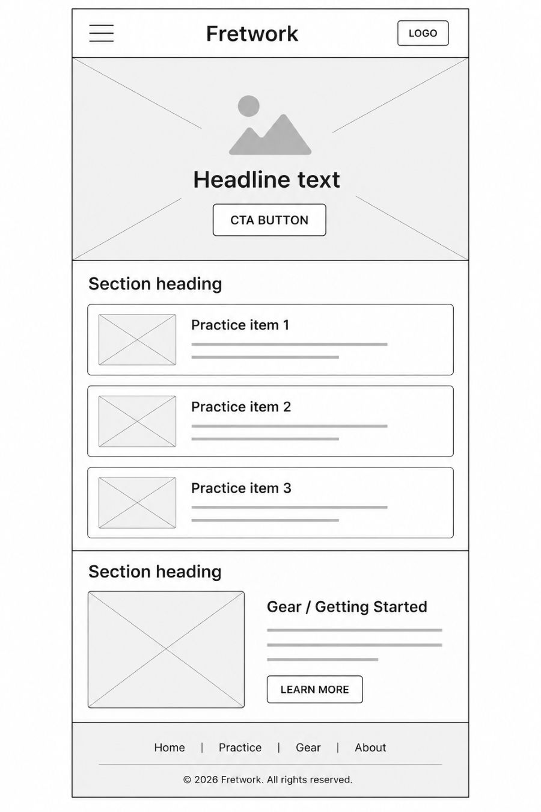
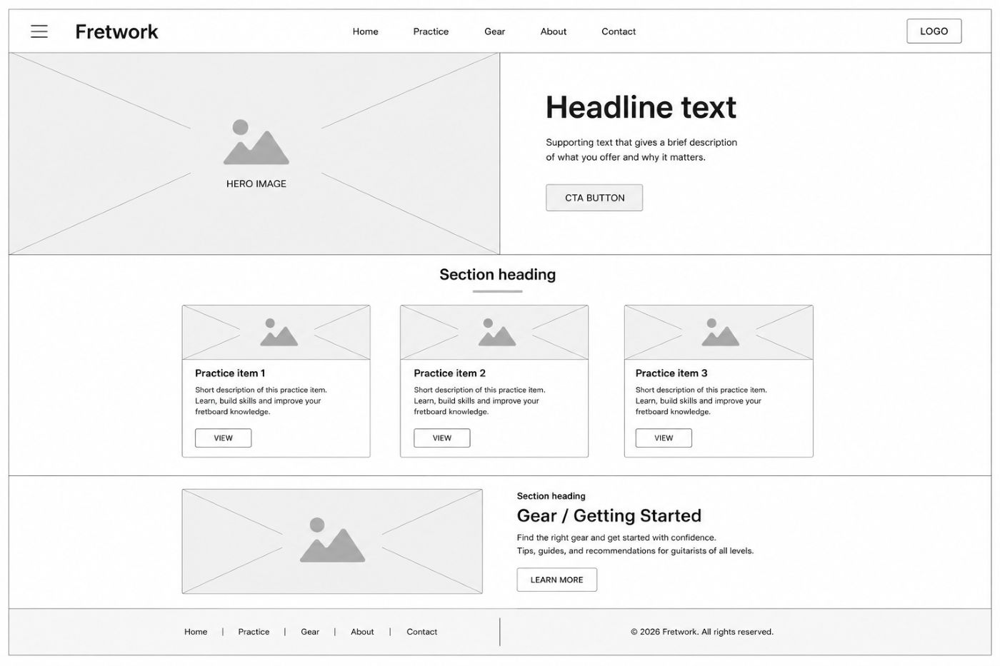

Fretwork
"Fretwork" plays on the guitar's fretboard while doubling as a nod to careful, hands-on craftsmanship — fitting for a site built around the slow, deliberate work of learning an instrument one chord at a time.
Reason for selection: the name is short, memorable, and immediately readable as guitar-related without being tied to any one brand, teacher, or method — leaving room for the site to grow as a personal practice log and beginner resource.
What the site provides
Fretwork is a personal practice hub and resource guide for beginner-to-intermediate guitar players. The site provides a browsable library of chords, scales, and songs to practice, along with beginner-friendly guidance on gear and building a practice routine — drawn from first-hand experience learning the instrument.
Visitor questions this site answers
I just picked up a guitar for the first time — which chords should I actually practice first?
What's a reasonably priced beginner guitar and tuner that won't fight me while I'm learning?
How much should I be practicing each week, and how do I keep it from feeling overwhelming?
Sunburst & rosewood palette
The palette is drawn from a classic sunburst guitar finish and rosewood fretboard: aged paper for the page surface, deep ink for text, a warm sunburst amber for primary accents, a rosewood wine for structural dividers, and a brass gold reserved for small labels.
Type system
Three typefaces cover three distinct jobs on the site: a warm serif for headings that reads like an old instrument catalog, a clean sans for body copy, and a monospace face for small technical labels (difficulty tags, chord names) that echoes guitar tab notation.
Home page — mobile & desktop
Sketches of the home page at a small (320px) mobile viewport and a larger desktop/tablet viewport.

